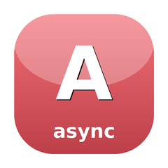

SugarAsync
Shared async vocabulary for ReactPHP

Shared async vocabulary unifying ReactPHP usage across the SugarCraft monorepo. A CancellationSource owns the cancellation flag and hands out read-only CancellationTokens; Subscription handles make disposal uniform; AsyncOps covers timeouts, deadlines, retry with jittered backoff, single-flight coalescing, debounce, throttle and fan-in. Beside the promise helpers sit loop-free blocking engines, process helpers that run and pump child processes with deadlines and byte caps, and a bounded TTL AsyncCache that coalesces in-flight loads.
Install
composer require sugarcraft/sugar-asyncRequires PHP 8.3 or newer, react/event-loop ^1.6, react/promise ^3.3 and sugarcraft/sugar-core, which this package pins to dev-master. A project on minimum-stability: stable may fail to resolve that require, so add "minimum-stability": "dev" with "prefer-stable": true to the consuming root manifest.
Quickstart
use SugarCraft\Async\{AsyncOps, CancellationSource};
$source = CancellationSource::new();
// Attach a cancellation callback
$source->token()->onCancel(function (): void { echo "Cancelled!\n"; });
$source->cancel(); // prints "Cancelled!"
// Timeout wrapper
$loop = \React\EventLoop\Loop::get();
$somePromise = \React\Promise\resolve('eventually');
$promise = AsyncOps::withTimeout($somePromise, 5.0, $loop);
// Retry with backoff
$attempts = 0;
$promise = AsyncOps::retry(
function () use (&$attempts) {
if (++$attempts < 3) {
return \React\Promise\reject(new \RuntimeException('transient failure'));
}
return \React\Promise\resolve('succeeded on attempt ' . $attempts);
},
attempts: 3,
baseBackoffSeconds: 0.5,
);What's in the box
onRetry: and pendingNotice hooks, and the disposal pass behind Subscriptions::unsubscribe()) into the host's own diagnostics. setLogSink(null) restores the error_log() default, which writes to stderr under stock PHP and can corrupt a render in progress.Retry::bounded() runs a result-driven retry loop with every wait clamped to the remaining budget, with no event loop involved. Retry::nap() is a sleep re-armed after EINTR. Retry::reconnect() redials until success or cancellation. ChildPump::drain() runs one select loop over all pipes and answers a DrainResult. The AsyncOps forwarders delegate to them, and Backoff carries the schedule.ChildRun runs one child with a deadline and a per-stream byte cap, blocking through run() or on the loop through launch(). ChildPump reads its pipes to EOF without one wedged pipe blocking another. A timed-out child is terminated through a TERM, grace, KILL ladder.ForkChannel, and settles with the child's exit status. Requires ext-pcntl and ext-posix; without them it refuses up front.Concepts
The library has three ways to wait, and the choice decides which helper you call. Promise helpers (AsyncOps::withTimeout(), retry(), debounce()) return promises and arm their timers on a React\EventLoop\LoopInterface, which defaults to the shared loop. Blocking engines (Retry::bounded(), Retry::nap(), ChildPump::drain()) run a select or sleep loop of their own and never touch the event loop, so they suit a CLI that has no loop running. Await::until() is the one place a CLI entry point may block on the loop.
Cancellation is split in two. A CancellationSource is the writer and a CancellationToken is the reader. You pass the token down to every operation and keep the source where you decide to stop. Every registration returns a Subscription, so a component can unhook its callback when it is torn down.
Process helpers are built on the same vocabulary. ChildRun never hands argv to a shell, except through commandLine(), which is the one explicit exception. The default deadline and per-stream cap are ten seconds and 8 MiB.
Tasks and recipes
Cancel a retry from the UI. Pass the token to retry(), and cancelling the source aborts the attempts that have not started yet.
$source = CancellationSource::new();
$promise = AsyncOps::retry(
static fn () => fetchRemote(),
attempts: 5,
baseBackoffSeconds: 0.2,
token: $source->token(),
maxTotalSeconds: 10.0,
);
// Later, from a key handler:
$source->cancel();Run a command with a deadline. ChildRun returns a ChildResult that reports how the child ended.
use SugarCraft\Async\ChildRun;
$r = ChildRun::new(['git', 'status', '--porcelain'])
->withTimeout(5.0)
->withMaxBytes(1_048_576)
->run();
if ($r->timedOut()) {
// the child was terminated after the deadline
} elseif ($r->succeeded()) {
// $r->stdout holds the captured output
}Cache a slow lookup with a TTL. AsyncCache::fetch() coalesces concurrent loads for one key and, when enabled, keeps serving the last good value if a reload fails.
use SugarCraft\Async\AsyncCache;
$cache = AsyncCache::new(ttlSeconds: 30.0, serveStaleOnError: true, maxEntries: 200);
$cache->fetch('weather:Berlin', static fn () => loadWeather('Berlin'))
->then(static fn (array $w) => render($w));Debounce a search box. AsyncOps::debounce() returns a Debounced handle, so each keystroke invokes it and only the last call inside the window runs.
$search = AsyncOps::debounce(static fn (string $q) => runSearch($q), 0.3);
$search('ma');
$search('mai');
$search('main'); // only this call runs, after 0.3 s of silenceFan in several requests. all() resolves once every promise has settled, and race() adopts the first outcome.
AsyncOps::all([$a, $b, $c])->then(static fn (array $results) => print_r($results));
AsyncOps::race([$primary, $mirror])->then(static fn ($first) => use_result($first));Configuration and options
There is no global configuration. Each helper takes its options as named arguments, and the constructor-style factories take the same knobs. The defaults below are the ones the source uses.
| Option | Where | Default | Effect |
|---|---|---|---|
attempts | AsyncOps::retry() | 3 | Total runs, including the first. Not a retry count. |
baseBackoffSeconds and jitter | AsyncOps::retry() | 0.1 and 0.0 | Base delay for the exponential schedule, and the jitter fraction applied to it. |
maxTotalSeconds | AsyncOps::retry() | null (no budget) | Overall budget. Exceeding it rejects with a TimeoutException. |
trailing | AsyncOps::throttle() | false | When true, the last suppressed call fires at the end of the window. |
ttlSeconds | AsyncCache::new() | 60.0 | How long a loaded value counts as fresh. |
serveStaleOnError | AsyncCache::new() | false | Serve the last value when a reload fails, instead of rejecting. |
maxEntries | AsyncCache::new() | null (no cap) | Caps stored keys. An adopt past the cap evicts the least-recently-stored entry. |
| Deadline and byte cap | ChildRun, ChildPump | 10 seconds and 8 MiB per stream | Set with withTimeout() and withMaxBytes() on ChildRun. On the pump, withDeadline() takes an absolute monotonic time, and withCap() sets the byte cap. |
MAX_FRAME_BYTES | ForkChannel | 16 MiB | Largest frame a channel will send or accept. A larger length prefix is treated as a broken peer. |
setLogSink() | AsyncOps | error_log() | Destination for swallowed-failure notices. |
Architecture
AsyncOps is a facade. Its methods forward to focused classes: Timeouts holds the timer machinery for withTimeout() and withDeadline(), Retry holds the waiting engines and Backoff holds the schedule, Debounced and Throttled hold the timer state behind the two rate limiters, and Pending carries the progress hook.
Child processes take two paths. ChildRun::run() drives ChildPump, a stream_select() loop over every open pipe, so a child that fills its stderr buffer cannot wedge a read of stdout. ChildRun::launch() builds a ChildRunLaunch that does the same work as loop callbacks. A periodic check, rather than a readable stream, observes the exit, and a child that is still running when its kill budget is spent is reaped on a later tick, so the loop never blocks on proc_close().
ForkedTask connects parent and child with a ForkChannel, a socket pair that carries 4-byte big-endian length-prefixed frames. The parent reads frames on the loop, and it kills and reaps the child when the token fires, the deadline passes or the collector throws.
Examples
examples/async-operations.phpcovers the timer-backed helpers on a private loop:debounce()andthrottle()return invokable handles, andall(),race()andboundWait()are demonstrated alongside them.examples/cache.phpshowsAsyncCacheas cache-aside with coalescing, a monotonic clock seam that needs no sleeps, serve-stale-on-error and the bounded entry cap.examples/cancellation.phpwalks the cancellation vocabulary: sources, tokens and disposable registrations, plus the rule that cancellation is not an error. Every promise there settles synchronously, so the example runs without an event loop.
Run them from the library directory with php examples/cache.php and the same pattern for the others, after composer install.
Testing
composer install && vendor/bin/phpunitThe suite runs from tests/bootstrap.php, which calls SugarCraft\Testing\LoopPin::pinStableClock(). That call matters because ext-uv computes timer deadlines against a clock refreshed once per loop iteration, so a timer armed after a long synchronous idle is already overdue. ExamplesTest lints and runs every example, and ReadmeSnippetsTest does the same for every PHP fence in the README. Tests that arm timers should assert scheduled state, using isPending() on the timer handles, and not wall-clock time.
ProgramSimulator from sugar-testing does not drive timers, because it pumps stdin only. Promises waiting on the shared \React\EventLoop\Loop::get() loop never settle under it, so drive async TUI flows with a real loop and a guard timer.
Troubleshooting
A rejected promise exits 0 with no message. ReactPHP does not print unhandled rejections. Attach a rejection handler in examples and tests, with then(null, ...) or otherwise().
A timeout never fires. The loop must run. Call $loop->run() on the loop you passed in, or let your host program's loop drive the timers this library arms.
A singleFlight or AsyncCache behaves oddly after a fork. Its state lives in one process. Create these objects after pcntl_fork(), in the process that will use them.
A ForkedTask call throws at once. It needs ext-pcntl and ext-posix, and it refuses up front with a RuntimeException rather than returning a promise that can never settle.
Failure notices interleave with the terminal output. The default sink writes to stderr. Install a sink with AsyncOps::setLogSink() to route notices into your own diagnostics.
Composer resolves an old candy-async. The package was renamed to sugarcraft/sugar-async in the 2026-10 rename, and no compatibility aliases were shipped. Update the use statements.
Upstream mapping
sugar-async is an original SugarCraft design, with no one-to-one Go counterpart. Some of its shapes are borrowed from other ecosystems, and the source cites them where they apply.
| SugarCraft type | Borrowed shape |
|---|---|
Cancellable, CancellationSource, CancellationToken | Go's context.Context Done channel, and the source and token split of .NET's CancellationTokenSource |
Subscription, CallbackSubscription | RxJS's Subscription, and Node's EventEmitter.removeListener |
Subscriptions | RxJS's Subscription group |
ForkChannel | The socketpair frame channels used by candy-code's child-process relays and candy-git-server's WorkerFork. This is an in-family shape, not an upstream one. |
Caveats
Every stateful surface is per-process. That covers a singleFlight closure's in-flight map, an AsyncCache store and its coalesced flights, a Debounced handle's pending burst, a Throttled handle's cooldown and queued trailing call, and a CancellationSource's registered callbacks. Sharing one across a fork boundary is unsafe. Promises settled in one process never reach the other, and a callback registered before the fork fires in whichever process cancels.
Changelog and versioning
There is no tagged release yet, so the package follows the dev-master track of the monorepo. The 2026-10 rename to sugar-async is the one name change on record. Watch the repository history for changes until a first release is cut.
Source & demos
- Source on GitHub
- Full README
- Runnable examples
- Original SugarCraft design. No one-to-one Go counterpart.
API
| Class | Method | Description |
|---|---|---|
| CancellationSource | new(): self | Factory: create a new source with its own token |
| CancellationSource | token(): CancellationToken | Returns the read-only token for this source |
| CancellationSource | cancel(): void | Request cancellation. Idempotent. |
| CancellationSource | isCancelled(): bool | Returns true if cancel() has been called |
| CancellationSource | onCancel(callable): Subscription | Registers a cleanup callback on the source's own token (CancellationSource implements Cancellable); same fire-once, handle-un-registers semantics as CancellationToken::onCancel(). |
| CancellationToken | none(): self | Shared never-canceled sentinel — the safe default for optional token parameters; its onCancel() returns a born-spent handle and retains nothing |
| CancellationToken | isCancelled(): bool | Returns true if the source has been canceled |
| CancellationToken | onCancel(callable): Subscription | Register a callback; fires immediately if already canceled (the handle is then born spent). Returns a Subscription — unsubscribe() before the token fires un-registers the callback, which is the leak guard when a token outlives the operation that registered on it. |
| Cancellable | isCancelled() · cancel() · onCancel(callable) | Interface CancellationSource implements — type against it when a component must be cancellable |
| Subscription | unsubscribe(): void | Interface: disposes the registration; the removal closure runs at most once, from unsubscribe() |
| Subscription | isActive(): bool | Interface: false once unsubscribed, or born spent |
| CallbackSubscription | of(Closure): self | Live handle over a removal closure — the concrete Subscription onCancel() returns |
| CallbackSubscription | settled(): self | Born-spent handle (the callback already fired immediately); unsubscribe() is a no-op |
| Subscriptions | new(): self | Empty composite collection |
| Subscriptions | of(Closure): Subscription | Public glue: mints a standalone disposal handle from any cleanup closure (timers, listeners, temp-file owners) |
| Subscriptions | compose(Subscription ...): self | Combine multiple subscriptions into one atomic handle |
| Subscriptions | add(Subscription): void | Append one handle to the composite — the @internal path compose() builds through: on an already-unsubscribed composite an incoming handle is disposed immediately, and self-composition is ignored |
| Subscriptions | unsubscribe(): void | Dispose all underlying subscriptions |
| Subscriptions | isActive(): bool | Returns false after unsubscribe() |
| Subscriptions | count(): int · isEmpty(): bool | Size of the composite |
| Subscriptions | disposeAll(): void | @internal teardown worker behind unsubscribe(): snapshot-and-clear first, then dispose every handle; a throwing unsubscribe() is logged and never propagated — error_log() by default, redirectable via AsyncOps::setLogSink() (the same hook-failure contract as CancellationToken::fireCallbacks()) |
| AsyncOps | setLogSink(?callable $sink): void | The diagnostics door for the four swallowed-failure sites (cancellation callbacks, retry onRetry:, pendingNotice hooks, the Subscriptions::unsubscribe() disposal pass): route the notices into host logging; null restores the error_log() default |
| AsyncOps | withTimeout(PromiseInterface, float, ?LoopInterface, ?string label): PromiseInterface | Wrap a promise with a timeout; rejects with TimeoutException (seconds and optional label readable on it); null loop uses the shared one |
| AsyncOps | withDeadline(PromiseInterface, float, ?LoopInterface, ?callable onTimeout, ?string label): PromiseInterface | Ceiling on the remaining budget: on expiry rejects with TimeoutException and cancels the inner promise; late results are dropped, never adopted |
| AsyncOps | cancellable(PromiseInterface, ?CancellationToken, ?callable onCancel): PromiseInterface | Token guard: cancellation rejects with OperationCancelledException and runs the onCancel hook; the registration auto-un-registers when the inner promise settles — no loop parameter |
| AsyncOps | singleFlight(callable keyFn, callable worker): callable | Coalesces concurrent same-key calls into one in-flight worker — every joined caller receives the outcome; the slot frees on settle so the next call may start a fresh flight; the join is not abandonable by design (wrap it in cancellable() when the wait itself must be abandonable); stateful — never share across pcntl_fork |
| AsyncOps | retry(operation, attempts: 3, baseBackoffSeconds: 0.1, token:, maxTotalSeconds:, jitter: 0.0, loop:, now:, onRetry:): PromiseInterface | Retries a thunk with exponential backoff; a canceled token stops the remaining attempts (reject OperationCancelledException); maxTotalSeconds rejects with TimeoutException on budget exhaustion; onRetry fires when each backoff is scheduled and its errors are never propagated (they route through the log sink) |
| AsyncOps | retryBounded(operation, shouldRetry, budgetMs, backoff) | Forwarder to Retry::bounded() — blocking, result-driven, every wait clamped to the remaining budget |
| AsyncOps | nap(int $owedMicros) | Forwarder to Retry::nap() — a sleep that is re-armed after EINTR |
| AsyncOps | reconnect(dial, backoff, token:, loop:, onRetry:) | Forwarder to Retry::reconnect() — redials until success or cancellation; success ends the cycle |
| AsyncOps | drain(pipes, deadline, maxBytes) | Forwarder to ChildPump::drain() — one select loop over all pipes, returning a DrainResult |
| AsyncOps | all(iterable): PromiseInterface | Fan-in on every promise; empty input resolves to [] |
| AsyncOps | race(iterable): PromiseInterface | Adopts the first settled outcome; empty input throws InvalidArgumentException at the call site |
| AsyncOps | pendingNotice(PromiseInterface, float, callable onPending, ?LoopInterface): PromiseInterface | Fires the required advisory hook once if the promise is still unsettled after N seconds; the wait continues and the inner is never canceled |
| AsyncOps | boundWait(PromiseInterface, float, ?LoopInterface, ?string label): PromiseInterface | Bounded wait: still unsettled after N seconds rejects the wait with a TimeoutException naming (still pending) while the inner runs on |
| AsyncOps | debounce(callable, float, ?LoopInterface, ?CancellationSource): Debounced | Debounce wrapper returning a Debounced handle; only the last call fires after the window; optional source cancels it |
| AsyncOps | throttle(callable, float, ?LoopInterface, bool trailing): Throttled | Throttle wrapper returning a Throttled handle; fires at most once per interval, trailing edge opt-in |
| Debounced | __invoke(...) · flush() · isPending() · unsubscribe() · isActive() | Handle AsyncOps::debounce() returns: each invoke returns a promise — the scheduled call resolves with the result (rejects if the work throws), superseded calls resolve null; flush() runs the pending burst immediately and returns that PromiseInterface (give it a rejection handler, or a rejecting burst dies silently); unsubscribe() drops the burst (its promise resolves null) and spends the handle — later calls answer null without arming timers |
| Throttled | __invoke(...) · flush() · isPending() · unsubscribe() · isActive() | Handle AsyncOps::throttle() returns; suppressed calls resolve null, and with trailing: true the last suppressed call fires at window end consuming a fresh window (the once-per-window cap holds at every edge, not only the first); flush() runs a queued trailing call immediately and ends the cooldown — void, the outcome arrives on the suppressed call's own promise; unsubscribe() drops any queued trailing call (its promise resolves null) |
| Suspended | new(callable resume, mixed state = null) · resume(): ?Closure · state(): mixed | Paused command as data; resume() yields the Cmd closure exactly once (a second call returns null) |
| AsyncCache | new(ttlSeconds: 60.0, serveStaleOnError: false, ?clock, ?maxEntries): self | TTL'd async memo — loop-free, it arms no timers; injectable clock for tests; optional stored-key cap that evicts the least-recently-stored value (>= 1 when set) |
| AsyncCache | fetch(string key, callable loader): PromiseInterface | Fresh entry resolves instantly; otherwise the loader starts — concurrent same-key fetches coalesce; a synchronous throw counts as a failed load |
| AsyncCache | peek(string): mixed · has(string): bool · isFresh(string): bool | Render-path reads: last stored value (fresh or stale), a value is held, a held value is within TTL |
| AsyncCache | isLoaded(string): bool · ageSeconds(string): ?float | Fresh OR in-flight (the loading-indicator read); monotonic age of the held value, past the TTL on purpose |
| AsyncCache | invalidate(string): void · clear(): void | Drop a key / every entry and supersede in-flight loads — displaced arrivals resolve their own callers without adopting into the store |
| AsyncCache | count() · keys() · ttlSeconds() · servesStaleOnError() · maxEntries() · withTtl() · withServeStaleOnError() · withMaxEntries() | Introspection over stored keys (fresh or stale, insertion order) and settings; the with* setters return new handles over the same store |
| OperationCancelledException | (extends RuntimeException) | Rejection when a token-guarded operation is canceled — cancellable(), and a token canceled mid-retry — and when the caller abandons a wait wrapper: cancel() on a withTimeout(), withDeadline(), retry(), pendingNotice() or boundWait() handle rejects with this while the inner operation keeps running |
| TimeoutException | seconds(): ?float · label(): ?string | Rejection from withTimeout(), withDeadline(), boundWait() expiry, and retry()'s maxTotalSeconds budget; carries the budget and optional label for message building |